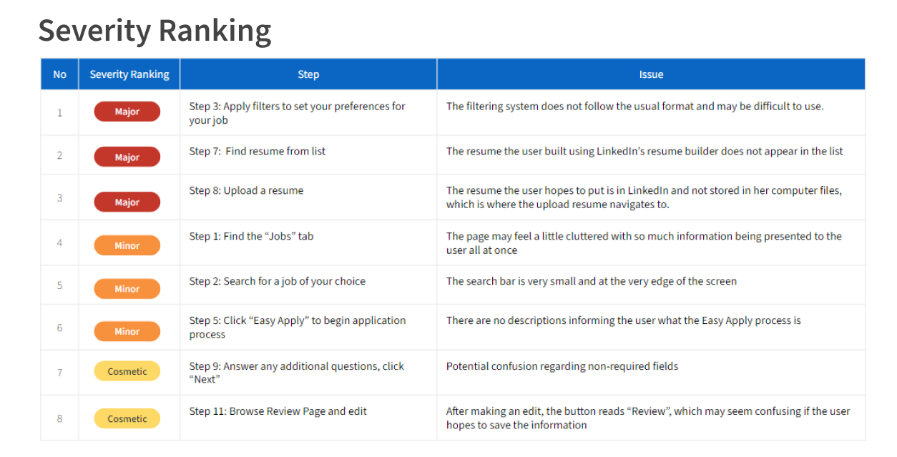

A dive into optimizing LinkedIn's job application
design to improve user experience
Project Type
Class Project
Project Role
Project Manager UX/UI Designer
Duration
5 weeks
Teammates
Adam Lamin Punit Munnangi
Mela Son
⚠ ⚠ Page under construction ⚠ ⚠
Overview
Project Context
LinkedIn is a global leader in job networking
and search services, backed by its exceptional reputation; however,
we believed we could further enhance LinkedIn's market value and
customer satisfaction by improving its job search and application process.
We engaged in two major processes to ensure we created a user-centric design
that would truly help LinkedIn succeed, starting with exploratory methods before the redesign,
and then various user testing to inform and test the redesign.
×
Evaluation Methods
Cognitive Walkthrough: What do we think are issues?
We began our exploration by creating a task: “Find an internship or entry-level job and apply through Easy Apply”
We walked through this task as a new user would and broke this task
into 12 steps to analyze in detail. At each step, we identified
potential issues and ranked them based on severity to prioritize
which issues needed to be addressed first.

Competitive Analysis: What do other companies do?
With the issues we identified in the cognitive walkthrough in
mind, we turned to LinkedIn’s competitors to assess the
current effectiveness of LinkedIn and propose ways to improve it.
Competitive Analysis
What do other websites do well?
To investigate potential ideas and features for
our site, we did competitive analysis of 5 other small Japanese restaurant sites and 2
chain restaurant websites to see how they demonstrated their color
scheme, mood, site navigation, and other special features. Some of the
key takeaways we drew from our analysis were to have very clean color
palettes and styles throughout the site, splitting our long menu into
different sections to allow for easier browsing, creating multiple pages
for different sections of the site instead of having a singular landing page,
and reducing the amount of text users will need to read. From these insights,
we began thinking about site navigation and created moodboards that would encapsulate the feel
of our
website.
Design and Prototyping
Wireframing + Low Fidelity Prototype
With a clear vision of what we wanted to create for the website, we
began with a wireframe that mostly outlined our site architecture,
image placement, and home screen reorganization for both the mobile
and desktop version. As a group, we also discussed potential issues and
created fallback plans in case some of our features were not implementable.
After settling on our wireframe outline, we began adding in images,
buttons, and actual text. My main role was working on the menu and its
related pages, including the main menu page, the menu item customization page,
and the payment page. In this first iteration, our menu had no images of
specific dishes because the restaurant did not have the resources to be
able to include an image with every single menu item. This was also
where I included the idea of using tabular organization with icons to
allow users to isolate and only see one food category at a time.
Critiques + Higher Fidelity Prototype
Upon completing our low fidelity prototype, we sought out critiques from
our client, our peers, and our professor. Through this process, we
received helpful feedback that allowed us to improve on our site.
One major flaw we found was that we lacked any confirmation page,
which made it unclear for the user whether their order had gone through
or if their reservation was made. The site overall was still relatively
plain so we added a cherry blossom background to begin synching the color scheme.
I also experimented with a second version of the menu that split
customization into a different page and enlarged the visual for the menu item.
This would allow the menu page to appear less cluttered and allow the
users to see the dish they are ordering which could help inform their decision.
Final Design
User Testing + Final Prototype
Upon completion of our previous iteration, we
conducted one user test and provided them with scenarios to walk through our site.
We received no complaints about the functionality and flow of our website,
however they did have some qualms about our choice of background. They
observed that the background was a little too distracting and clashed
with the actual content of our website. The menu page was also a little
too simple with the removal of all information except the name, image,
and price of the dish. After receiving the feedback from this test, we created our final prototype.
Homepage
Features image carousel of dishes and saliend buttons that link
to menu and reservation pages because they are the most common
features needed by customers.
Menu
Allows for easy tabular organization of menu, displays images of
each dish as well as the price and brief description. Leads to a
second customization page after a dish is selected
Reservation
Calendar view for the reservation, reveals more details after a
specific day is selected, only showing the time slots still available
for that day, easy drop down to select party size
Reflection
What did I learn?
As this was my first time working with a client,
one challenge our group faced was managing client expectations and aligning
that with the customers’ needs and the widely-used practices in design.
The feature that was most difficult to resolve was the inclusion of
reviews on the website. Our client was adamant about not having reviews
on the website or buying good reviews on Yelp because he felt it was
biased and dishonest, whereas many of the users thought that the reviews
were useful in helping them decide whether they wanted to eat there or
what to order. We ended up deciding to follow the client’s request because,
ultimately, the site was for him and the users could find other ways to
find reviews themselves with external sites.
Overall, this experience taught me the importance of iteration and how
our designs can sometimes drastically change over the lifespan of our project.
My role in the creation of the prototype was creating the menu pages.
My main struggle was determining the right balance of information that
would be present within one screen. I experimented with both having too
much and too little information and through getting many iterations of
feedback, I was able to identify the perfect mix of both.
Ultimately, we were able to implement all of the features we planned for and created a site that I
believe
everyone was happy with.
Check out more projects:
COGS 102C UCSD Sanitation
A study into the solution to address
collective hygiene in densely-populated areas in UCSD